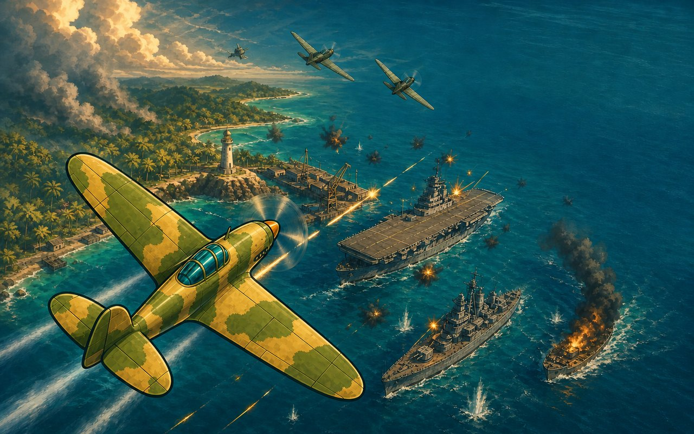

Аркадний шутер: небо і море
Harbour Raid

Три рубежі, один літак
Harbour Raid - аркадний вертикальний шутер для Mac. Ви пілот одного літака проти цілої оборони: винищувачів у небі, танків і гармат на землі, кораблів у морі.
- Пальмовий рубіж: гай, бази, залізниця і бронепоїзд.
- Морський рубіж: конвой, авіаносець, острови-батареї і підводний човен.
- Портовий рубіж: гирло річки, лінкори, форт на молу і гавань.
Без зайвого
Перший рівень безкоштовний, повна гра - одна покупка назавжди. Без реклами, без підписок, без облікових записів. Гра працює без інтернету й анонімно рахує, як проходять рівні, без особистих даних. Інтерфейс українською та англійською.
Незабаром у Mac App Store. Потрібна macOS 13 або новіша.